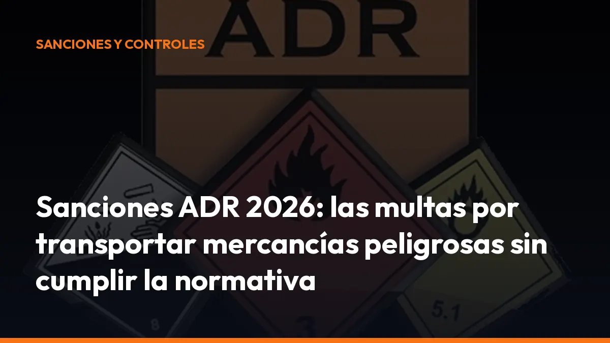

Sanciones ADR 2026: las multas por transportar mercancías peligrosas sin cumplir la normativa

En 2026, los controles ADR en España utilizan una lista de verificación actualizada y clasifican los incumplimientos en tres categorías de riesgo. Un error documental, una mala estiba o la falta de señalización puede terminar en una multa ADR de miles de euros y en la inmovilización inmediata del vehículo.
La solución es sencilla: revisa cada transporte antes de salir y lleva toda la documentación disponible, también en formato digital.
¿Cuánto son las sanciones ADR en España?
Las sanciones por transportar mercancías peligrosas dependen del tipo de incumplimiento, su gravedad, el riesgo generado y la responsabilidad de cada parte.
Como referencia, las infracciones muy graves pueden alcanzar:
Desde 4.001 €
Y, en determinados supuestos o casos de reincidencia, las multas pueden ser superiores y llegar a 6.000 €, 18.000 € o más, según la infracción aplicable y los antecedentes.
La cifra exacta no es igual para todos los incumplimientos. La Administración analiza factores como:
- Riesgo para la seguridad: posibilidad de incendio, explosión, fuga o contaminación.
- Documentación: ausencia, errores o falsedad en la carta de porte y certificados.
- Señalización: falta de paneles naranja, etiquetas o placas de peligro.
- Estado de la carga: embalajes dañados, fugas o estiba insuficiente.
- Responsabilidad: actuación del cargador, transportista, expedidor y conductor.
- Reincidencia: repetición de infracciones en los plazos establecidos.
Por eso, no basta con conocer el importe de una multa. Debes evitar que un incumplimiento se convierta en una infracción de riesgo alto.
Estas son las infracciones ADR que pueden bloquear tu vehículo
Algunas infracciones se consideran especialmente graves porque pueden provocar daños a las personas, al vehículo, a la carretera o al medio ambiente.
Transporte sin certificados o documentación obligatoria
Llevar mercancías peligrosas sin la carta de porte ADR, sin las instrucciones escritas o sin los certificados exigibles puede generar una sanción muy grave.
También debes comprobar que la información coincide con la carga real:
- Número ONU.
- Denominación oficial de transporte.
- Clase de peligro.
- Grupo de embalaje.
- Código de túnel.
- Cantidad transportada.
- Datos del expedidor y del destinatario.
Un dato incorrecto puede hacer que el documento se considere incompleto o insuficiente. El resultado: retrasos, sanción y problemas para justificar la operación durante una inspección.
Conductor sin certificado ADR válido
El conductor debe disponer de la formación ADR que corresponda al tipo de transporte que realiza. Según la operación, puede necesitar formación básica, especialización para cisternas u otras especialidades.
Si el certificado está caducado, no corresponde al transporte realizado o simplemente no se puede acreditar durante el control, el vehículo puede quedar retenido hasta resolver la situación.
Comprueba antes de cada salida:
- Fecha de caducidad del certificado.
- Categoría y especialidad autorizada.
- Identidad del conductor.
- Correspondencia entre la formación y la mercancía transportada.
Falta de paneles naranja y señalización ADR
Los vehículos que transportan mercancías peligrosas deben llevar la señalización reglamentaria. La ausencia de paneles naranja, placas-etiqueta o marcas de peligro puede considerarse un incumplimiento de alto riesgo.
La señalización permite que los servicios de emergencia identifiquen rápidamente el peligro en caso de accidente. Si falta o está colocada de forma incorrecta, el vehículo puede ser inmovilizado.
Revisa siempre:
- Paneles naranja delanteros y traseros.
- Placas-etiqueta laterales y traseras.
- Número ONU cuando sea obligatorio.
- Visibilidad y legibilidad de la señalización.
- Estado físico de las placas y soportes.
Estiba y sujeción inadecuada de la mercancía
Una carga ADR mal estibada puede desplazarse, volcar, golpearse o provocar una fuga. Por este motivo, la estiba inadecuada aparece entre los incumplimientos de mayor riesgo en los controles ADR.
Debes asegurar que:
- Los bultos no pueden desplazarse durante la marcha.
- Los envases están protegidos frente a golpes.
- La carga no supera los límites del vehículo.
- Los materiales incompatibles están separados.
- La mercancía está protegida frente a movimientos y vuelcos.
- No existen embalajes deteriorados o con fugas.
Una sujeción insuficiente no solo puede provocar una multa ADR. También puede causar un accidente grave y hacer responsable a la empresa que organizó o ejecutó la operación.
Inmovilización inmediata: la consecuencia que más paraliza tu actividad
La multa no es la única consecuencia de incumplir el ADR. Cuando el control detecta un riesgo elevado, la autoridad puede ordenar la inmovilización inmediata del vehículo.
Esto significa que no podrás continuar la ruta hasta corregir el incumplimiento o hasta que la autoridad determine que existen condiciones de seguridad suficientes.
La inmovilización puede producirse, entre otros casos, por:
- Fugas o derrames de mercancías peligrosas.
- Ausencia de documentación esencial.
- Conductor sin certificado ADR válido.
- Vehículo sin autorización u homologación necesaria.
- Falta de señalización reglamentaria.
- Envases, cisternas o equipos gravemente defectuosos.
- Estiba que no garantice la seguridad de la carga.
- Incumplimiento de medidas básicas de protección.
En la práctica, un camión inmovilizado implica pérdida de tiempo, retrasos al cliente, costes adicionales y riesgo de perder la siguiente carga.
La lista de verificación ADR 2026: qué revisan en carretera
La actualización aplicada en España en 2026 establece una lista de verificación más detallada para los controles de mercancías peligrosas. Esta lista ayuda a unificar las inspecciones y a identificar rápidamente los incumplimientos que pueden poner en peligro la seguridad.
El control puede revisar:
- Documentación: carta de porte, instrucciones escritas y certificados.
- Conductor: formación ADR y documentación personal.
- Vehículo: homologación, autorización y estado técnico.
- Señalización: paneles naranja, etiquetas y números ONU.
- Carga: envases, embalajes, cisternas y sujeción.
- Equipamiento: extintores, equipos de protección y material de emergencia.
- Operación: carga, descarga, manipulación y medidas de seguridad.
- Empresa: procedimientos internos y consejero de seguridad cuando sea obligatorio.
Categoría I: riesgo alto
Incluye los incumplimientos que pueden provocar muerte, lesiones graves o daños importantes al medio ambiente.
Algunos ejemplos son:
- Transportar mercancías prohibidas.
- Utilizar un vehículo no autorizado.
- Circular sin señalización ADR.
- Transportar sin documentos esenciales.
- Llevar un conductor sin certificado válido.
- Detectar fugas de mercancía.
- Incumplir gravemente las normas de carga o estiba.
Consecuencia habitual: inmovilización inmediata en carretera y posible sanción muy grave, con multas ADR desde 4.001 € en los supuestos previstos por la normativa.
Categoría II: riesgo medio
Son incumplimientos que pueden causar daños o lesiones, pero que normalmente permiten corregir la situación durante la operación o antes de continuar.
Pueden incluir:
- Instrucciones escritas ausentes o incorrectas.
- Sujeción insuficiente sin riesgo inmediato extremo.
- Incumplimiento de determinadas inspecciones.
- Señalización incompleta.
- Deficiencias en las operaciones de carga y descarga.
La autoridad puede exigir una corrección inmediata y proponer una sanción según la infracción concreta.
Categoría III: riesgo bajo
Incluye errores que no generan un peligro inmediato para las personas o el medio ambiente.
Por ejemplo:
- Tamaño incorrecto de una señal.
- Información incompleta que no afecta a la seguridad inmediata.
- Documentos presentados fuera de plazo.
- Defectos menores de señalización o archivo.
Aunque el riesgo sea menor, no debes ignorarlo. La acumulación de errores puede evidenciar una falta de control interno y aumentar el riesgo de futuras sanciones.
¿Quién responde por una sanción ADR?
La responsabilidad puede alcanzar a varias partes. No siempre responde únicamente el conductor.
El transportista
Debe organizar el transporte de forma segura, utilizar un vehículo adecuado, contratar personal formado y comprobar que la documentación está disponible.
Si el transportista sale a ruta sin certificados, sin señalización o con un vehículo que no cumple, puede recibir una sanción y afrontar la inmovilización.
El cargador y el expedidor
El cargador debe entregar correctamente la mercancía, informar sobre sus características y utilizar embalajes adecuados.
Si facilita datos incorrectos, entrega envases defectuosos o prepara una carga que no puede transportarse con seguridad, también puede asumir responsabilidad.
El conductor
Debe comprobar la documentación, la señalización, el estado visible de la carga y los equipos obligatorios antes de iniciar el viaje.
La responsabilidad concreta dependerá de la infracción y de las obligaciones asignadas a cada parte. Por eso, documentar las comprobaciones resulta fundamental.
Evita las multas ADR con una revisión de 10 minutos
Antes de salir, completa esta comprobación:
1. Documentación completa: carta de porte y documentos ADR disponibles. 2. Datos correctos: número ONU, clase, grupo de embalaje y cantidades revisados. 3. Certificado vigente: formación ADR del conductor en vigor. 4. Señalización visible: paneles naranja y placas correctamente instalados. 5. Vehículo autorizado: certificados y homologaciones disponibles. 6. Carga estable: bultos y envases sujetos sin posibilidad de desplazamiento. 7. Envases íntegros: sin golpes, fugas, corrosión o cierres defectuosos. 8. Equipamiento completo: extintores, EPIs y material de emergencia. 9. Compatibilidad revisada: mercancías incompatibles separadas. 10. Archivo preparado: documentos guardados y accesibles durante el transporte.
Digitaliza la documentación y reduce errores en carretera
La documentación ADR debe estar disponible durante la operación y conservarse durante el tiempo exigido. Llevarla organizada en el móvil facilita la respuesta ante un control y evita buscar papeles en la cabina o en la oficina. Con Mi Carga puedes generar y gestionar documentación digital para tus transportes desde cualquier lugar:
- Desde el móvil: prepara la documentación directamente en la cabina.
- Archivo organizado: conserva la información de cada operación.
- Disponibilidad inmediata: accede a los documentos durante una inspección.
- Menos errores: reutiliza datos y reduce la escritura manual.
- Trazabilidad: mantén un registro claro de tus transportes.
Empieza con 10 portes de prueba y comprueba cómo funciona sin complicaciones. Después puedes elegir entre:
10 € al mes + IVA
o
90 € al año + IVA
Ambos planes incluyen portes ilimitados, modo sin conexión y trazabilidad ROTT. Activa tu suscripción en Mi Carga y prepara tus documentos con más rapidez.
Conclusión: cumple el ADR antes de entrar en carretera
Las sanciones ADR pueden superar los 4.001 € y llegar acompañadas de la inmovilización inmediata del vehículo. La falta de certificados, la ausencia de señalización, una fuga o una estiba inadecuada pueden convertir un transporte normal en un problema grave.
En 2026, la lista de verificación y las tres categorías de riesgo hacen que los controles sean más claros y exigentes.
No esperes a una inspección. Revisa la carga, confirma los certificados, comprueba la señalización y lleva la documentación disponible.
Empieza hoy con Mi Carga y reduce los errores antes de salir a ruta.
Fuentes y normativa consultada
- Ministerio de Transportes: mercancías peligrosas y normativa ADR
- Información sobre la actualización de los controles ADR en España en 2026
- Ley de Ordenación de los Transportes Terrestres en el BOE
- Mi Carga: suscripción y documentación digital para el transporte
Genera tus 10 primeros documentos gratis con Mi Carga
DeCA, carta de porte y ADR, en PDF, con QR y archivo automático en la nube.
Empezar con 10 documentos gratisArtículo informativo. Consulta siempre el caso concreto de tu operación. ¿Dudas? Escríbenos.